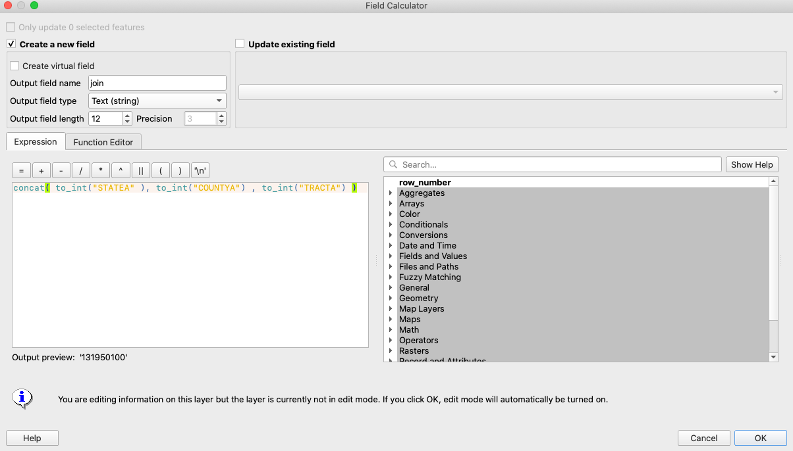

In-class and Assignment
Join census data from NHGIS to affordability data, explore with Plotly, and map
These are the updated intructions for downloading the appropriate data from NHGIS so that you can join it to the census shapefile.
All of the data for this exercise can be downloaded here. If you want to download and process the data yourself, follow instructions below. Otherwise, proceed to Step 1.
- Go to nhgis and download race/ethnicity data for every census tract in the country using NHGIS.
- Select Geographic Levels = census tract, Years = 2015-19, Topics = Race AND Hispanic Origin
- From the listr of data tables, select B03002. Hispanic or Latino Origin by Race.
- Sign up for a free account with NHGIS and download the data.
- Open the codebook and the data.
- Save a version of the data as a csv in your processed folder and select all variables up to ALUKE012. We will use the Population of one race alone variables to create the following new variables once it is joined to the ga_afford_ratio shapefile:
- Percent White alone, Not Hispanic
- Percent Hispanic or Latino
- Percent Black or African Alone, Not Hispanic
- Percent Asian Alone, Not Hispanic
- In the housing_access_georgia QGIS map document, add tracts_race_201519.csv to QGIS so that we can join it to the Georgia census tracts
- In class we struggled to join the csv to the shapefile. I was able to figure out the issue by looking closely at the GEOID fields in both files. Here's the reason: In both files the unique census tract id is composed State ID, County ID, Tract ID. In the shapefile, the County ID is called COUNTYFP and it is 3 digits with a 0 at the beginning if the COUNTYFP is only 2 digits long. In the csv, the County ID does not have a 0 at the beginning if it is 2 digits long. So the GEOID and AFFGEOID don't match in counties where the COUNTYFP is two-digits, and the join only worked for some of the census tracts.
To fix it we need to create a common Tract ID in each of the files. - In tracts_race_201519:
- Open the Attribute Table and create a new field -- name it "join"
- Output field type = "Text (string))"
- Expression = concat( "STATEA" , "COUNTYA" , "TRACTA" )
- This combines the 3 fields into one with no spaces in between. 
- In Afford Ratio (the shapefile of all census tracts in Georgia):
- Open the Attribute Table and create a new field -- name it "join"
- Output field type = "Text (string))"
- Output field length = 12
- Expression = concat( to_int("STATEFP") , to_int("COUNTYFP") , to_int("TRACTCE") )
- This converts each of the fields into numbers, which removes any leading zero, and combines the 3 fields into one with no spaces in between.
- Rename your tracts_race_201519 layer to "t" - you want to do this because when you join the data to another file it automatically inserts the file name in the new column name and it is MUCH easier if the filename is very short.
- You can now successfully join the tracts_race_201519 data to the shapefile by the "join" column.
- Once you have a successful join, export the shapefile to save the new joined data, name it ga_afford_race.shp.
- Create new columns in ga_afford_race using the new demographic data:
- pct_bipoc = (total population - white alone)/total population
- pct_hisp = hispanic /total population
- pct_black = black alone/total population
- pct_asian = asian alone/total population
- Create a choropleth of the each of the new demographic variables as a layer in your map document.
- You'll want to duplicate your ga_afford_race layer to style it by a differently for each variable, and rename the layer so that you can distinguish between the different styles.
- Make sure the color bins for each layer reflect the data - for demographics data, I find that equal interval works well, for instance: 0-20%, 20-40%, 40-60%, 60 - 80%, 80 - 100%
- example below
- Create several plotly scatterplots to compare either the affordability ratio or median property value to at least two of your demographic variables. Export one of them by cliking the "Export as image" button on the lower right of the plotly panel.
- Create a final map in Print Composer of one city in Georgia that explores demographics and housing affordability using the layers in the processed folder. Style this map carefully, making sure that the colors and bins help tell the story.
- Background choropleth layer style by percent Black
- Census tracts with Affordability Ratio > 1.05 styled with transparent fill and thick border
- Public Housing Locations sized by TOTAL_UNITS (data is in the data/processed folder)
- Upload one of your plotly scatterplots, and your final map to this discussion. What do the scatterplots tell you about the relationship between the variables you selected?. What did you learn from this assignment? What other data would you like to look for to understand affordable housing in Georgia?
-
One example: Create a map of the Black population, High Affordability Areas and Public Housing in Savannah, GA: